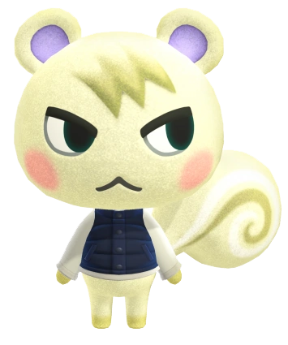

Marshal
Animal crossing
Munchi es un vecino ardilla de personalidad petulante introducido en Animal Crossing: New Leaf.

Nombre en otros idiomas:
 Marshal
Marshal
 Mathéo
Mathéo
 Huschke
Huschke
 Scott
Scott
Emitologia
-
Su nombre inglés, Marshal, podría provenir de la palabra inglesa "marshmallow" (malvavisco), en referencia a su aspecto a malvavisco. También se podría pensar que tiene un parecido a "Eminem" ya que ambos se llaman Marshal y ambos tienen pelo rubio.
-
Su nombre español, Munchi, deriva del inglés "munch", que significa "mascar", en referencia a como las ardillas mascan las nueces.
Apariencia
Munchi es una ardilla blanca con un fleco entrecortado de color bronce. También tiene marcas rosadas en sus mejillas y un color de lavanda en el dentro del oído. Sus patas y los remolinos a cada lado de su cola también son de color bronce. Los ojos de Munchi son negros y arqueados con un ojo lateral fijo, y su boca está vuelta hacia abajo. Esto lo hace parecer molesto, lo que hace que muchos lo confundan con un vecino gruñón. El sonrojo también lo hace ver femenino, lo que significa que a menudo también se lo confunde con un vecina. Él inicialmente usa una camiseta vaquera.
Casa
En New Leaf. la casa de Munchi tiene numerosos artículos de la serie desorden, junto con un tele plana, un perchero y una lavadora moderna. Tiene una portada de la Canción minimalista en exhibición en la parte superior de su mesa, mientras que la Canción minimalista también se reproduce en su cadena desorden. También hay un libro en su mesa, un cactus al lado de su cama, un foco trípode al final de su cama y un aire acondicionado en la pared. Su pared es una pared estudio, y su piso es una alfombra vaca.